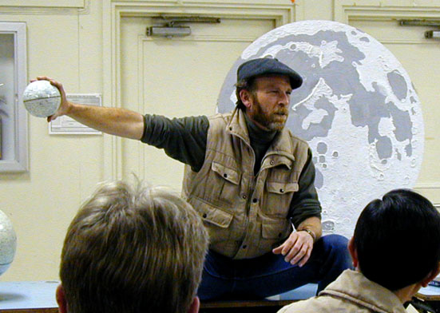

|  |
If you do, you certainly won't need to read anything about it in this column. If you don't, it can't be that important since you won't be able to see it.
What are we to do, stuck here?
In this particular case, we get an interesting little game we can play instead, though it is not for the incautious or inexperienced.
By a coincidence, this eclipse is happening the day before the Moon's greatest northern declination of the month.
Whazzat?
It's the day on which the Moon will ride highest in the sky that month. In this case, the day after new Moon.
So who cares? Especially after reading all the great reports from the eclipse?
Perhaps those of us left behind. For one thing, the eclipse will be over, and it's time to get on with life.
For another, that means conditions are ideal to try to spot the Moon as soon as possible after it's new (as a very, very thin young crescent).
This opportunity only comes once a year, and there are actually Moonuts who make a big deal out of how early this can be done.
Also, this is an important event for our Islamic members, since the first sighting of the new Moon determines the beginning of the month, especially important to trigger the start of Ramadan (if I understand the issue correctly. Though there appears to be some debate as to whether the first sighting anywhere is adequate to determine this time, or the calculated first sighting using mathematics, or local sightings must be used. I am not expert enough to offer opinions on these matters).
It stands to reason the soonest you can see such an event is that time when the post-new Moon is highest in the sky.
On the other hand, this is not always true, since it may not be in the same plane as the sun (it varies by roughly up to five degrees from the ecliptic). This additional "bonus distance" at the time of new Moon can be helpful.
So it is probably not the best time to set a record for an early sighting, but it is the only time you can try for an early Moon sighting when the Moon is tracking roughly the same plane as the Sun (just after a total eclipse!)
Considering that this is a far more rare event than a total eclipse, I guess we can consider ourselves lucky and proceed to see how we should go about it.
First, wait until the 22nd. It will do us no good to try earlier.
Second, this game is most easily played exactly at sunset - not one whit before! (Why? Because then it is safe. Be content with this method for now).
Make sure you have a clear western horizon. Make sure your scope is set up and your finder is aligned. If at all possible, use a tracking mount with a real polar axis. (No offense to alt-az folks, but sometimes that polar axis comes in handy.)
Do NOT point your scope at the sun.
Watch the sun set. Always spectacular. If you have nothing better to do this fine Friday night, go up to Fremont Peak and watch from either the Coulter overflow lot or the Southwest lot, on the way up to the actual Peak. These are my two favorite places to watch the sun set into the Pacific, though there is also a lot to be said for some spots along Skyline as well.
Make sure you note the exact position where the sun sets.
The second it slips below the horizon, point your telescope there and start working your way east, using only the polar axis.
A widefield eyepiece is best, and a single polarizing filter can be invaluable for cutting the skyglow at this point.
If you're lucky, you nail the Moon on the day after new, and can see both an amazingly slender crescent and some spectacular earthshine.
If you're not lucky, you get a great sunset and can proceed to do some deepsky observing.
So what's to lose?
I used to know how to find out who currently holds the record for the earliest sighting after new, but I don't seem to have the link any more.
Earlier I spoke of the Islamic calendar. Issues Arabic are forever coming up in any study of astronomy (and especially the moon) simply because so much excellent astronomical work has been of Arabic/Islamic origin, both in ancient times and modern.
My last foray into this subject brought a note from Jamie Dillon on the subject of Omar Khayaam.
He wished to embellish my remarks with some further comments:
"Besides his considerable accomplishments as an astronomer and mathematician, Khayaam was a Sufi, a genuine mystic and a great poet. The crappy poet we get exposed to with the Rubaiyat is Fitzgerald, a Victorian hack and drunk who thought nothing of mistranslating and sugaring the work of a world class mystic poet.
"Robert Graves, a really fine poet, the guy who severally wrote The White Goddess and I, Claudius, sat down with a Sufi teacher a while back and turned out a literal translation of the Rubaiyat from Persian."
He went on to give an example of how the well-known translation was essentially wrong due to shoddy work and omission ... further making the point that this well-known name has not been served well in modern times and popular culture.
Thanks, Jamie! I'd love to get my hands on the revised translation, and I have been gratified by the many notes I've gotten commenting on how interesting it was to find out how deeply scientific and astronomic Omar's works really were.